Hi-C tracks visualize chromatin contact frequencies from chromosome
conformation capture experiments. The ez_hic() function
supports both triangle (rotated) and square heatmap views, with multiple
color palettes and scale transformations.
Basic Usage
From a Matrix
The most common input is a symmetric contact matrix.
# Create example symmetric matrix
set.seed(42)
n <- 50
mat <- matrix(0, n, n)
for (i in 1:n) {
for (j in i:n) {
# Simulate distance-dependent decay
distance <- abs(j - i)
value <- 100 * exp(-distance / 10) + rnorm(1, 0, 5)
mat[i, j] <- max(0, value)
mat[j, i] <- mat[i, j]
}
}
# Add some TAD-like structure
mat[10:20, 10:20] <- mat[10:20, 10:20] + 30
mat[30:45, 30:45] <- mat[30:45, 30:45] + 25
# Plot as triangle (default)
ez_hic(
mat,
region = "chr1:1000000-1500000",
resolution = 10000
)
From a Sparse Data Frame
Hi-C data can also be provided as a sparse data frame with position pairs and scores.
# Create sparse format
data(example_hic)
head(example_hic)
#> bin1 bin2 count
#> 1 1 1 71
#> 2 1 2 14
#> 3 1 3 33
#> 4 1 4 21
#> 5 1 5 6
#> 6 1 7 13
ez_hic(
example_hic,
region = "chr1:1-500000",
resolution = 10000
)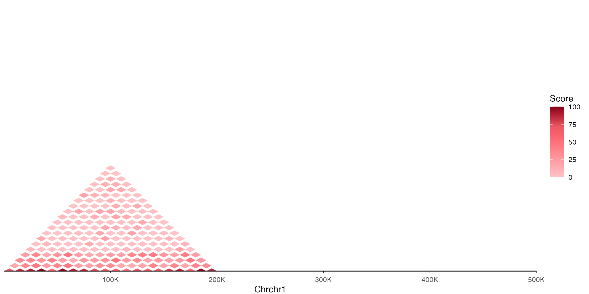
Visualization Styles
Triangle View (Default)
The triangle view rotates the matrix 45 degrees, with the diagonal at the bottom. This is the standard genome browser representation.
ez_hic(
mat,
region = "chr1:1000000-1500000",
resolution = 10000,
style = "triangle"
)
Square Heatmap View
The square view shows the full symmetric matrix, useful for detailed inspection.
ez_hic(
mat,
region = "chr1:1000000-1500000",
resolution = 10000,
style = "square"
)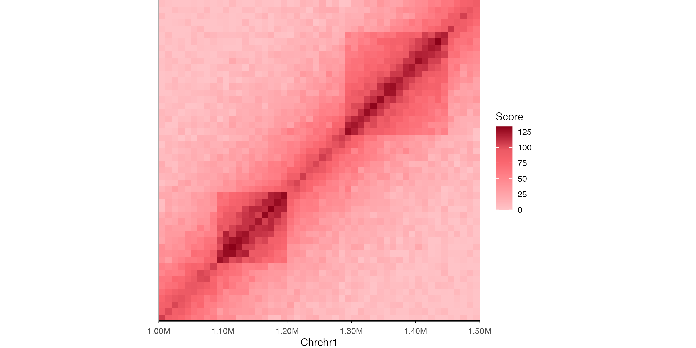
Color Palettes
ezGenomeTracks provides several color palettes optimized for Hi-C visualization.
Cooler (Red) - Default
ez_hic(
mat,
region = "chr1:1000000-1500000",
resolution = 10000,
palette = "cooler"
)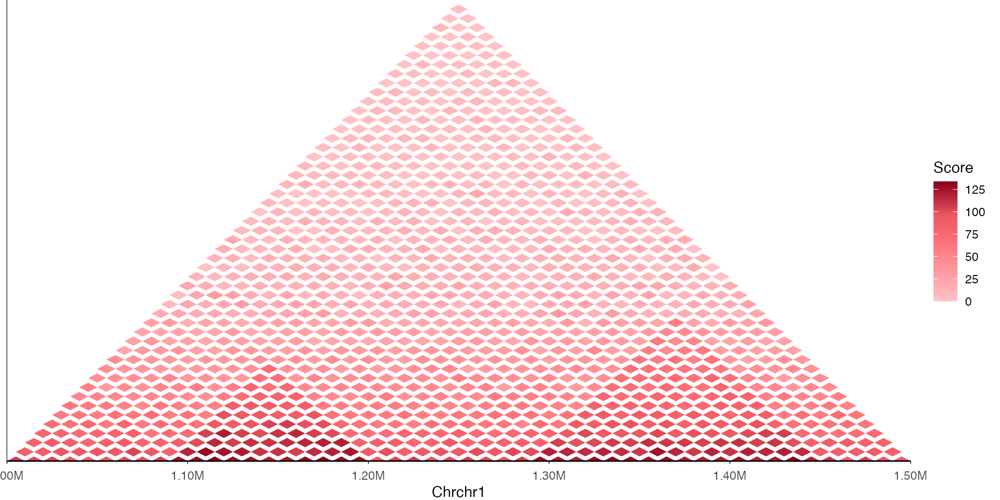
Yellow-Green-Blue
ez_hic(
mat,
region = "chr1:1000000-1500000",
resolution = 10000,
palette = "ylgnbu"
)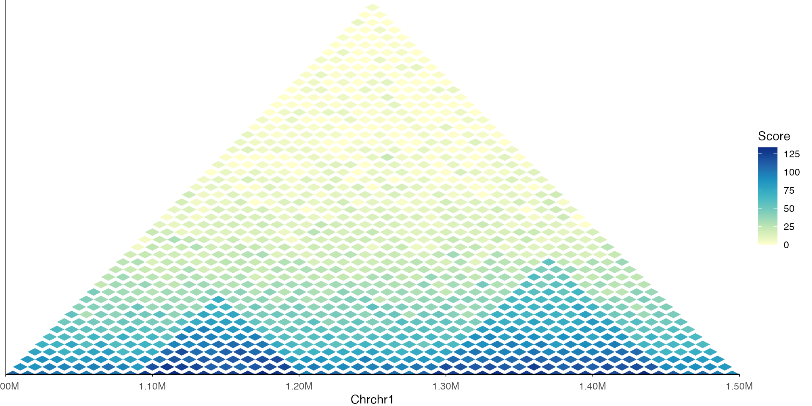
Viridis
ez_hic(
mat,
region = "chr1:1000000-1500000",
resolution = 10000,
palette = "viridis"
)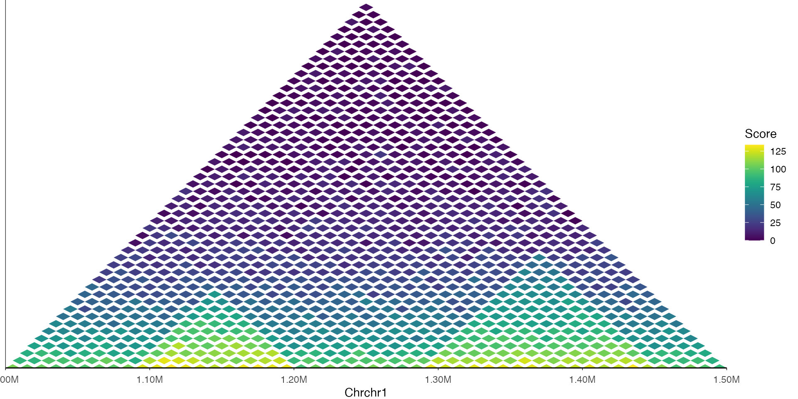
Blue-White-Red (Diverging)
Useful for differential Hi-C or log-ratio comparisons.
ez_hic(
mat,
region = "chr1:1000000-1500000",
resolution = 10000,
palette = "bwr"
)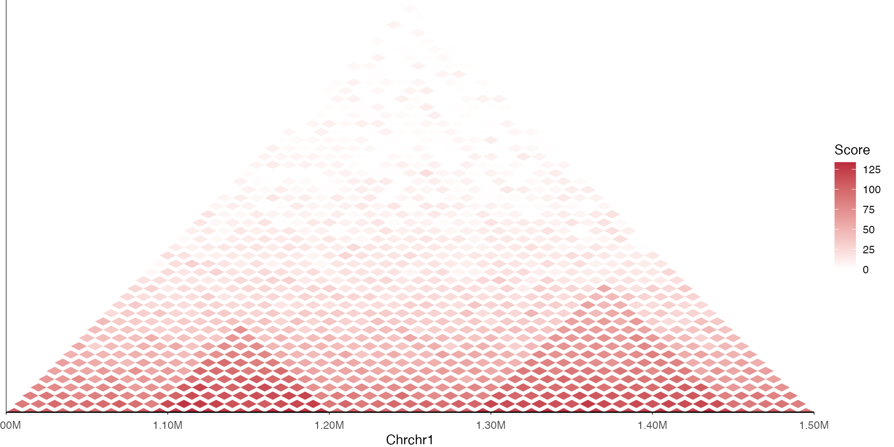
Scale Transformations
Hi-C data often spans several orders of magnitude. Use transformations to improve visualization. ## Log10 Transform
ez_hic(
mat,
region = "chr1:1000000-1500000",
resolution = 10000,
transform = "log10"
)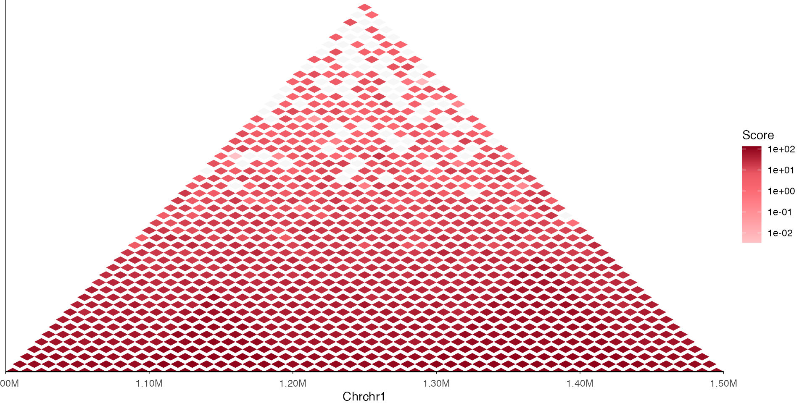
Square Root Transform
ez_hic(
mat,
region = "chr1:1000000-1500000",
resolution = 10000,
transform = "sqrt"
)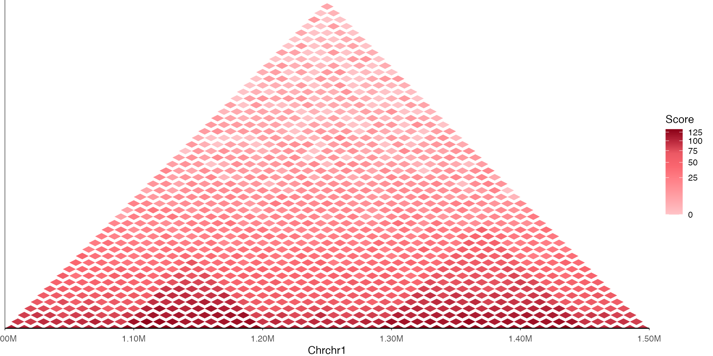
Filtering by Distance
For triangle views, you can limit the maximum interaction distance shown.
# Only show interactions within 300kb
ez_hic(
mat,
region = "chr1:1000000-1500000",
resolution = 10000,
max_distance = 300000
)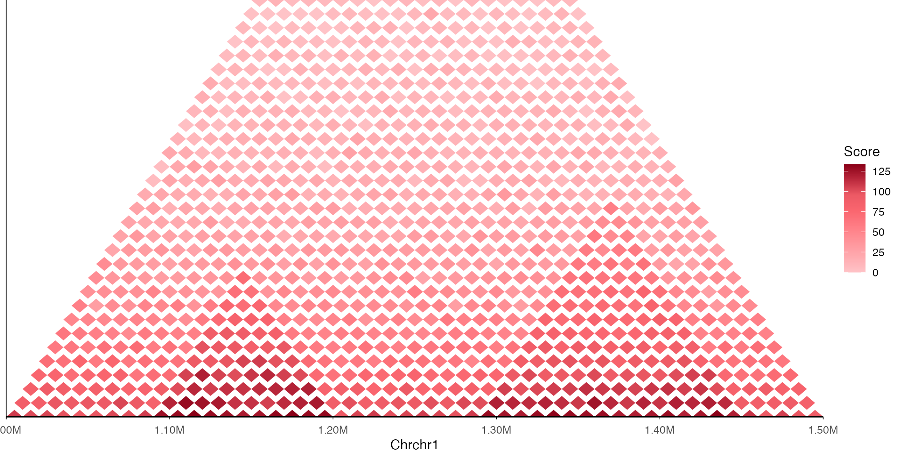
Setting Color Scale Limits
Control the color scale range to highlight specific value ranges or ensure consistency across samples.
ez_hic(
mat,
region = "chr1:1000000-1500000",
resolution = 10000,
transform = "log10",
limits = c(0.5, 2) # log10 scale limits
)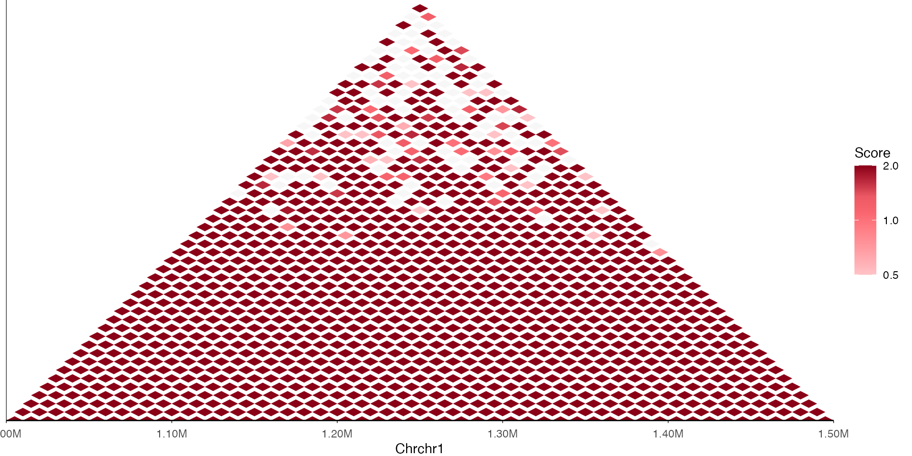
Combining with Other Tracks
Hi-C tracks are typically displayed with coverage and gene tracks to interpret chromatin structure in genomic context.
region <- "chr1:1000000-1500000"
resolution <- 10000
# Hi-C track
hic_track <- ez_hic(
mat,
region = region,
resolution = resolution,
style = "triangle",
max_distance = 300000,
palette = "cooler"
)
# Simulated signal track
signal_df <- data.frame(
seqnames = "chr1",
start = seq(1000000, 1490000, by = 1000),
end = seq(1001000, 1491000, by = 1000),
score = abs(sin(seq(0, 10*pi, length.out = 491)) * 50 + rnorm(491, 20, 5))
)
signal_track <- ez_coverage(
signal_df,
region = region,
colors = "steelblue",
y_axis_style = "simple"
)
# Stack tracks
vstack_plot(
hic_track,
signal_track,
region = region,
heights = c(0.33) # signal track is 1/3 height of Hi-C track
)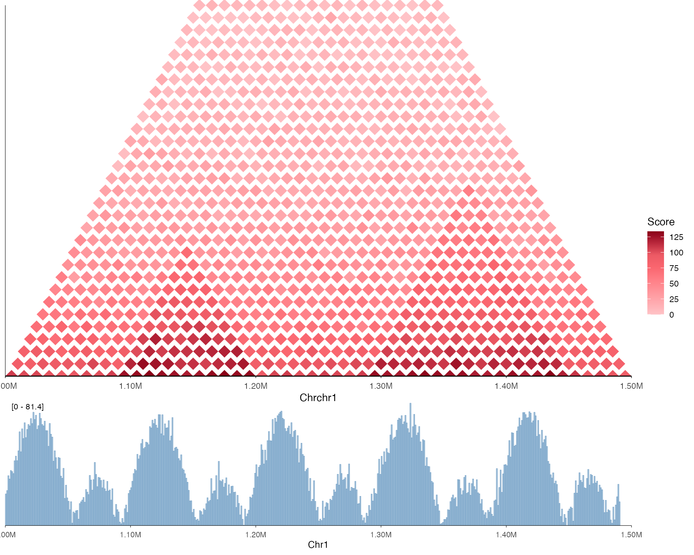
Advanced Usage
Rasterization for Large Matrices
For regions with many bins, rasterization improves performance and reduces file size.
ez_hic(
large_matrix,
region = "chr1:1-10000000",
resolution = 10000,
rasterize = TRUE,
rasterize_dpi = 300
)Using geom_hic_triangle() Directly
For full customization, use the geom directly with ggplot2.
# Convert matrix to data frame format
hic_df <- data.frame(
pos1 = rep(seq(1000000, 1490000, by = 10000), each = 50),
pos2 = rep(seq(1000000, 1490000, by = 10000), times = 50),
score = as.vector(mat)
)
hic_df <- hic_df[hic_df$pos2 >= hic_df$pos1, ] # Upper triangle only
ggplot(hic_df, aes(x = pos1, y = pos2, fill = score)) +
geom_hic_triangle(resolution = 10000, max_distance = 300000) +
scale_fill_hic(palette = "cooler", trans = "log10") +
scale_x_genome_region("chr1:1000000-1500000") +
coord_cartesian(clip = "off") +
theme_minimal() +
labs(x = "Chr1", fill = "Contacts")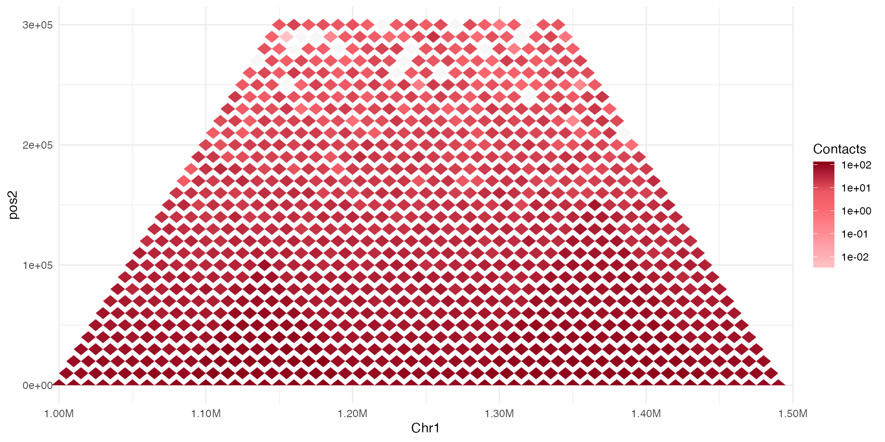
Hiding the Diagonal
Remove self-interactions (diagonal) from the plot.
ez_hic(
mat,
region = "chr1:1000000-1500000",
resolution = 10000,
show_diagonal = FALSE
)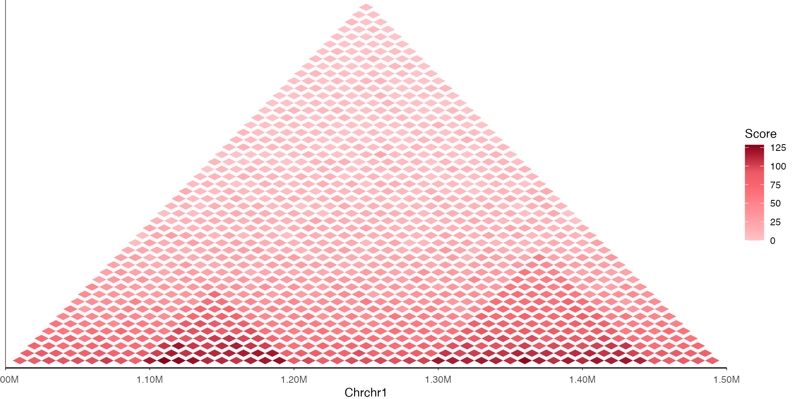
Tips and Best Practices
Resolution: Always specify the correct resolution (bin size) of your Hi-C data. Common resolutions are 5kb, 10kb, 25kb, 50kb, and 100kb.
Transformation: For raw contact counts,
transform = "log10"usually works best. For balanced/normalized data,"identity"or"sqrt"may be appropriate.Memory: Large Hi-C matrices consuming memory. Use
max_distanceto limit data or downsample for large regions.Color limits: Set consistent
limitswhen comparing multiple samples to ensure colors are comparable.File formats: For .hic or .cool files, use external tools (like
strawrorcooler) to extract the region of interest before plotting.TAD visualization: TAD boundaries often appear as corners of contact domains. Use lower resolutions (25-50kb) to see TAD structure clearly.